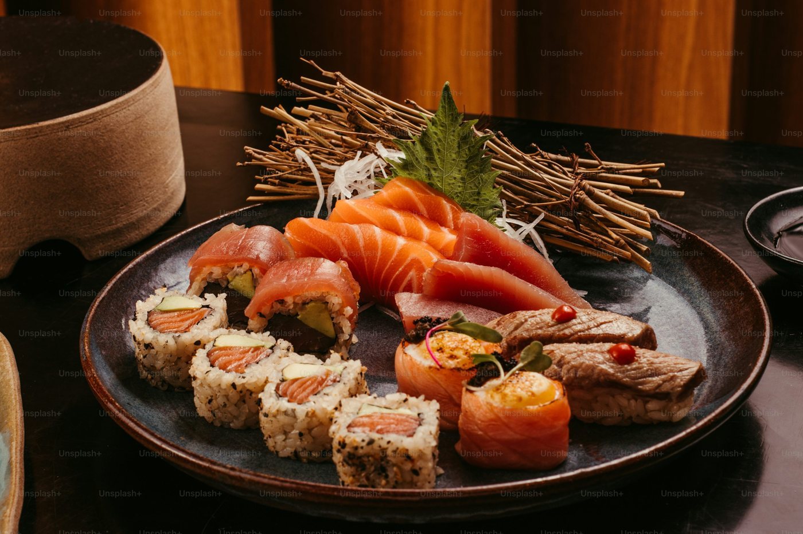
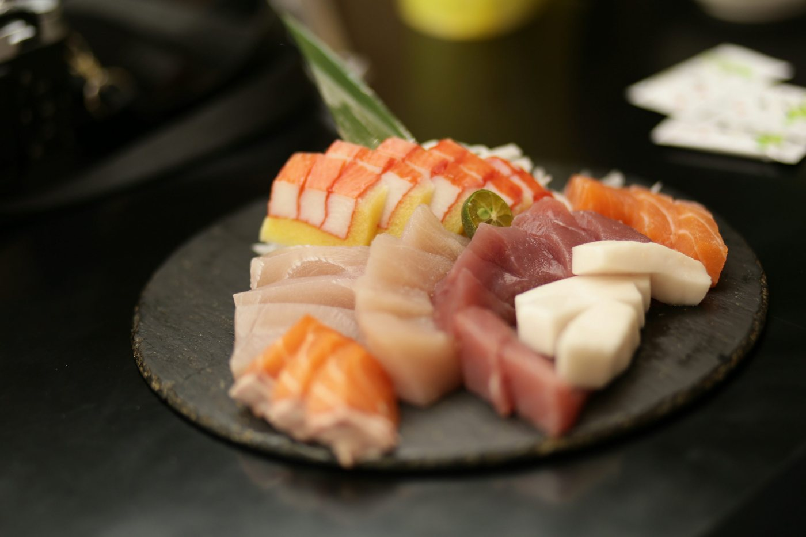
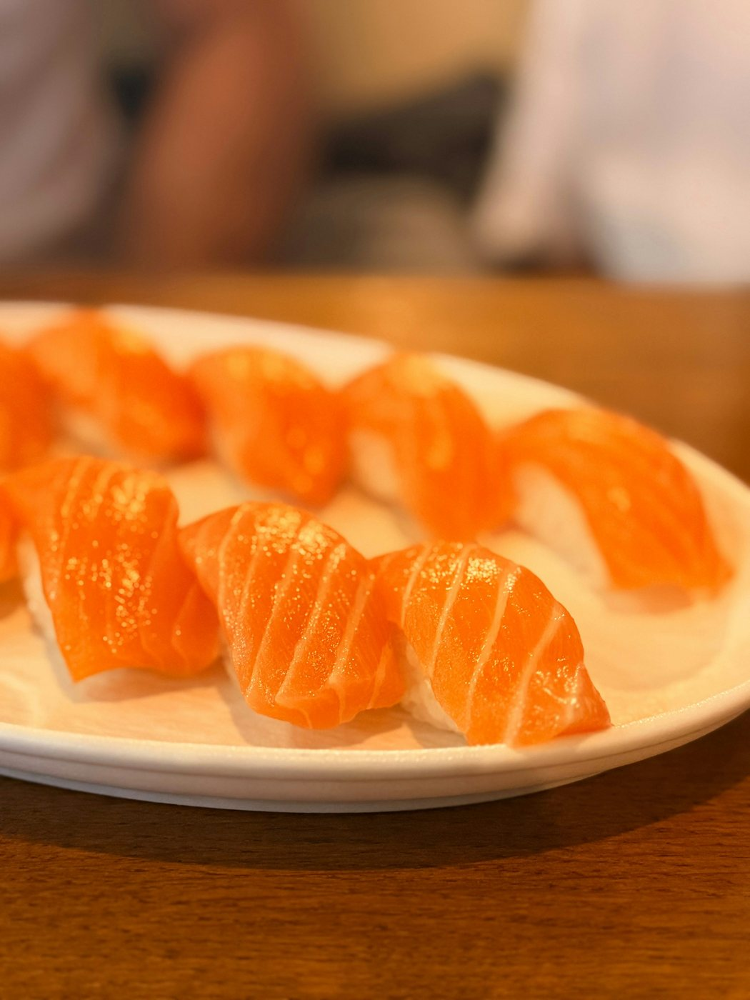
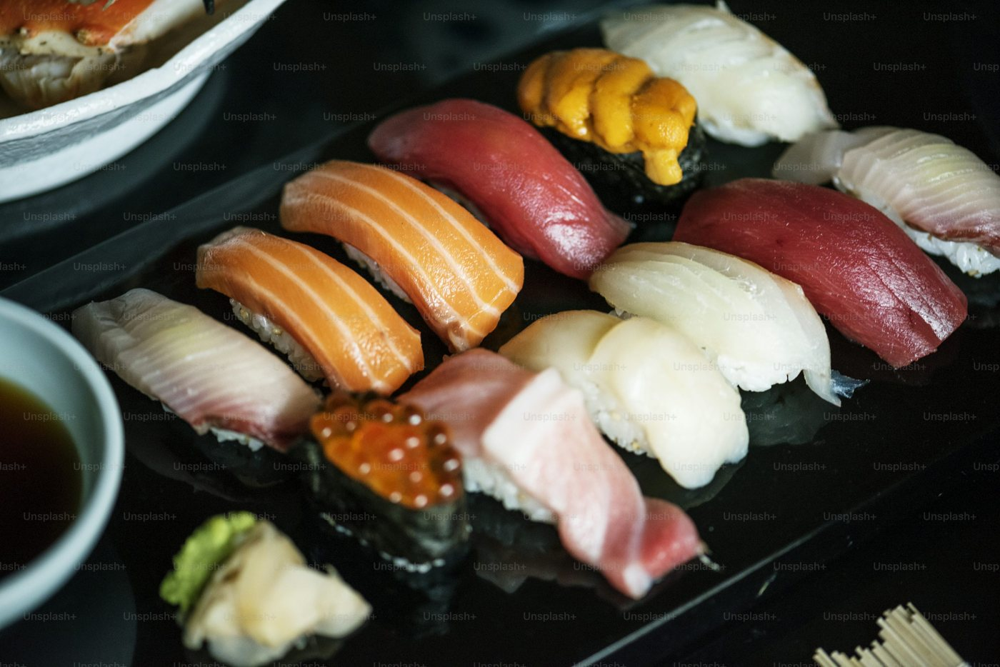
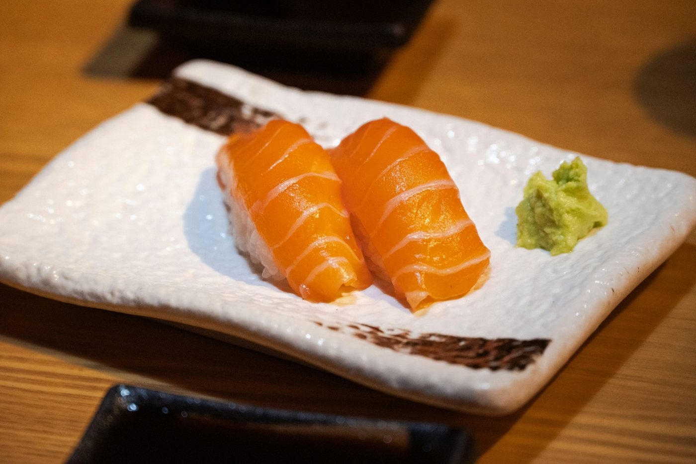

Mais pedidoCombinado Aurora
R$ 68,0012 peças, salmão, atum e delicados rolls da casa.
Delivery japonês · feito com cuidado
Peixe fresco, mãos cuidadosas e a beleza do simples. Um convite para fazer da próxima refeição um momento especial.

Uma seleção da casa
Feitos com atenção. Escolhidos para hoje.

Mais pedido12 peças, salmão, atum e delicados rolls da casa.

ClássicoSalmão fresco sobre arroz temperado no ponto certo.

Da estaçãoUma seleção sazonal feita para descobrir novos sabores.

Fresco do diaFatias precisas, textura delicada e frescor de origem.
Nossa maneira de fazer
A cozinha japonesa nos ensina que o cuidado está nos detalhes: no arroz, no corte, no tempo. A Zushi traz esse jeito de fazer para cada entrega, para você desacelerar e apreciar o agora.
Encontrar seu próximo favorito